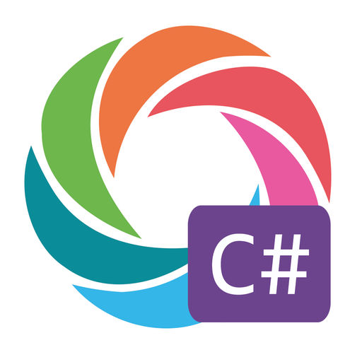

If you you have't done so go ahead and do the basic "Hello World" code from Microsoft: This will only take you about 10 mins to complete, if that. It will give you a good idea of what we are about to start.
There are plenty of apps to help us along the journey, while none of these are needed for the class; (one will be used for the assesment if you choose to apply for the course) I found to have something quick to have on your phone to review helps. (all these apps are for apple and android)
Grasshopper is the app that is used for the assesment when you apply. It teaches you Java Script; this is a good app to learn some basics and learn to think logically with coding. For the assesment you will need to complete the first "Fundamentals" portion. It does take a while but I found it to be fun. plus if you screw up a lot you can always clear out your progress and start over.
Quizlet is a fantastic app for flashcards. There some good card sets for C# here and here
